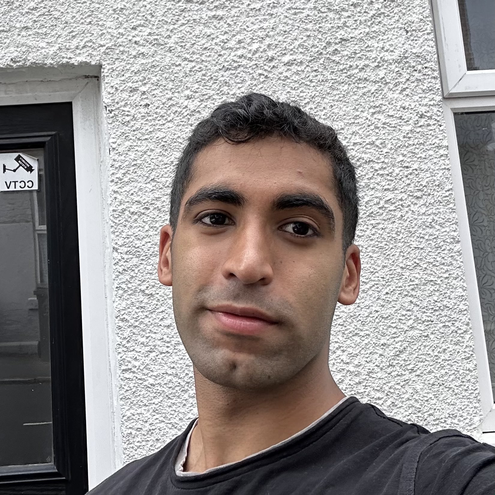

Arran Rai
Leicester, UK · Aerospace Graduate
👋 Hello! I'm Arran. I enjoy building things, and I'm currently learning web development. This site is intentionally minimal and fast, kachow.

Leicester, UK · Aerospace Graduate
👋 Hello! I'm Arran. I enjoy building things, and I'm currently learning web development. This site is intentionally minimal and fast, kachow.